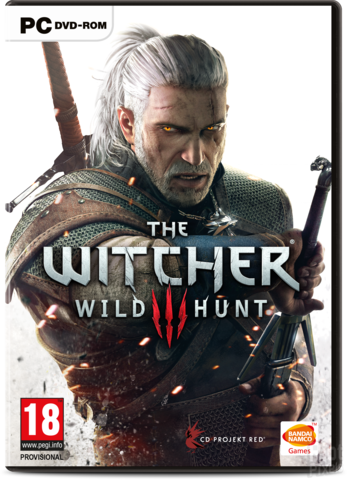
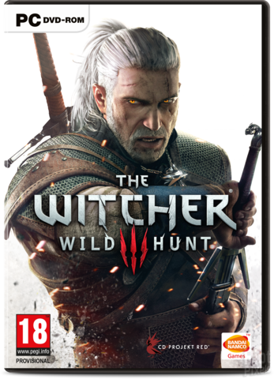

Geralt of Rivia was a witcher, Ciri's adoptive father, and despite their tumultuous relationship, loved the sorceress Yennefer, who was considered the love of his life.
During the Trial of the Grasses, Geralt exhibited unusual tolerance for the mutagens that grant witchers their abilities. Accordingly, Geralt was subjected to further experimental mutagens which rendered his hair white and may have given him greater speed, strength, and stamina than his fellow witchers.
Despite his title, Geralt did not hail from the city of Rivia. After being left with the witchers by his mother, Visenna, he grew up in their keep of Kaer Morhen in the realm of Kaedwen.
As his first choice, Geralt chose "Geralt Roger Eric du Haute-Bellegarde", but this choice was dismissed by Vesemir as silly and pretentious, so "Geralt" was all that remained of his chosen name. "Of Rivia" was a more practical alternative and Geralt even went so far as to adopt a Rivian accent to appear more authentic.

 
